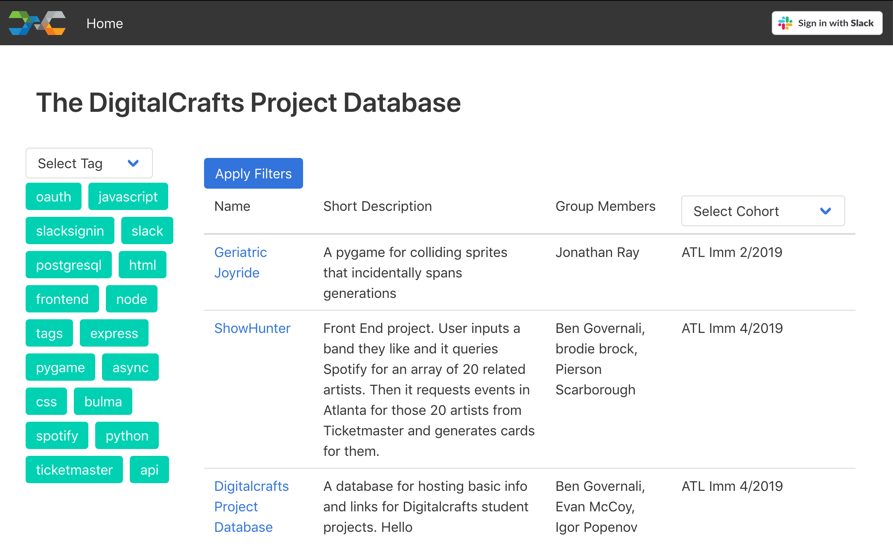
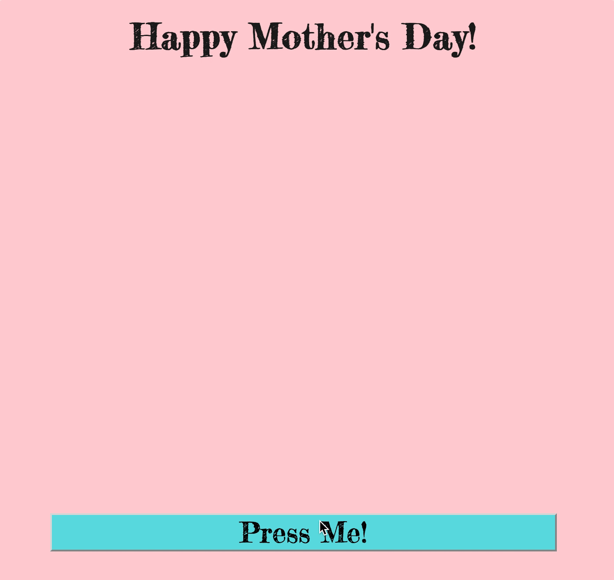
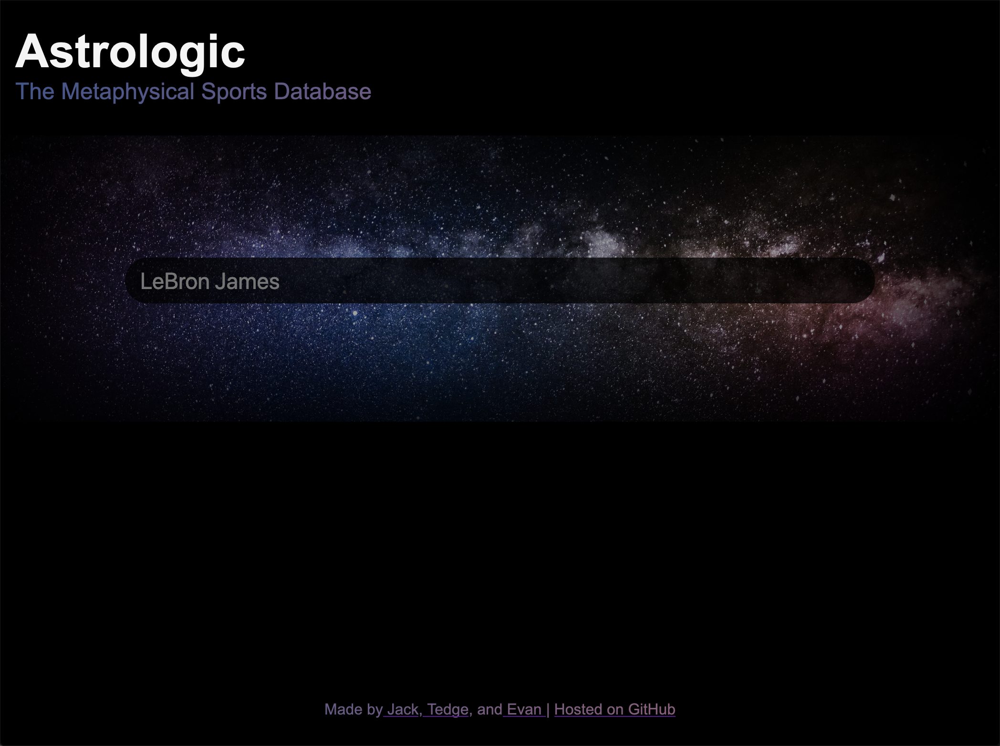

Evan
McCoy
Developer /
Aspiring Astronaut
Hey there! My name is Evan and I’m a Developer from Atlanta, Georgia.
About:
In April of 2019 I left my job as a Product Manager to study Full Stack Web Development at DigitalCrafts full-time. Previously I've also had roles in QA, Project Management, and Consulting. My main goal when learning how to build web apps is to one day build an app that I can start a business around. I feel the best when I'm able to build and implement some of the crazy ideas that I come up with.
I grew up in Atlanta, and graduated from Georgia Tech with a degree in Industrial Engineering. Music is my first love - I’ve been playing the Saxophone for 15 years and was a DJ in college. I also have two dogs, Pepper and Tucker, who keep me sane and well-exercised. Lastly I love to travel overseas, with some of my favorite trips being Scotland, South Korea, and Japan.
If you're curious about my subtitle - going to space is at the top of my bucket list. I've always been fascinated by the cosmos, and I hope by the time that space tourism is within my budget I am healthy enough to make it up there.
Skills:
Projects:
Heatseeker
Heatseeker is a project I built to solve a problem that I, as a thrifty sneakerhead, had - getting exclusive sneaker releases at retail price. When a new release happens, aspiring purchasers have 3 options: try to beat out the bots for the shoes online, pay a premium on the secondary market, or go down to their local sneaker store and enter a raffle. Your odds of winning a local raffle are much higher than online, but these local raffles can be hard to track down. Boutiques only post about them online, and they only last about 24 hours before the raffle is over. Heatseeker scans Instagram, looking for sneaker boutiques posting about their raffles, and centralizes all of these posts, allowing users to filter on them geographically so they can know which stores near them are holding raffles.
Heatseeker V2 is a React app, built on top of an Express API server, with a PostgreSQL database hosted via Amazon RDS. ToI built a node script that scrapes a collection of instagram accounts to find all of their recent posts, and picks out the recent posts that are related to raffles. I then built a manual validation form to grab some key data from each post or reject posts in case of false positives. The React front end displays all sneaker raffles posts from stores all over the country, and users can submit their location to filter the list down to stores within 100 miles. If there are no raffles going on, users can view old raffles to get a preview of what info Heatseeker has.
DigitalCrafts Project Database
The DigitalCrafts Project Database is a full-stack project for DigitalCrafts built with Node, Express, PostgreSQL, HTML, CSS, Javascript, and ES6 Renderer. It was built with a team of 3 over the course of 3 days in class. We built the DCPD to be a solution to a problem that many bootcamp students have: finding inspiration (or help) when building projects. Any DigitalCrafts student or alumni can submit a project to the database (via Slack authentication), and the database is viewable to everyone.
To Mom, Love Evan
To Mom, Love Evan is an interactive card I made for my mom for Mother's Day '19. My mom is nortoriously hard to shop for so I got her something no one else could, a website! I also took this as an opportunity to learn Three.js, a javascript library for 3d image rendering, built on WebGL.
Astrologic
Astrologic is a front-end project for DigitalCrafts, built by a team of 3 over 3 days of class. Inspired by fantasy sports, we wanted a way to find an edge when competing with our friends, so we decided to use information that no one else was to perfect our lineups - horoscopes. The page is built with HTML, CSS, and Javascript, and utilzies 2 APIs: the Wikipedia API to return player informationa and photos, and an Astrology API to return horoscope data.
